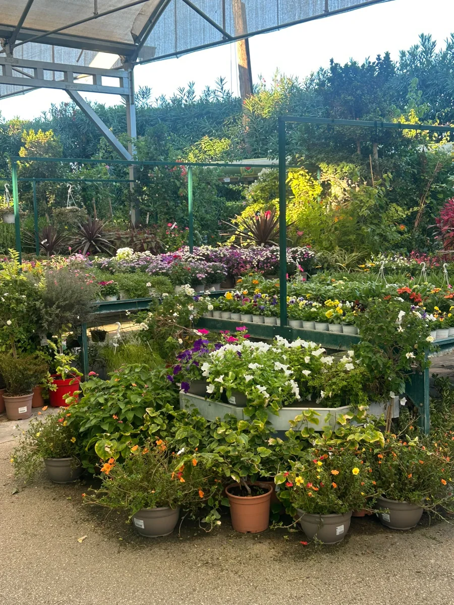
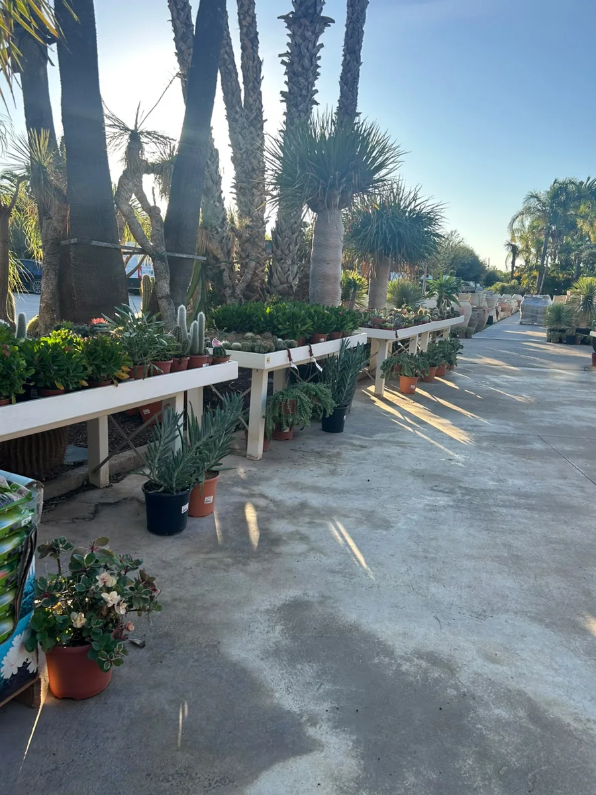
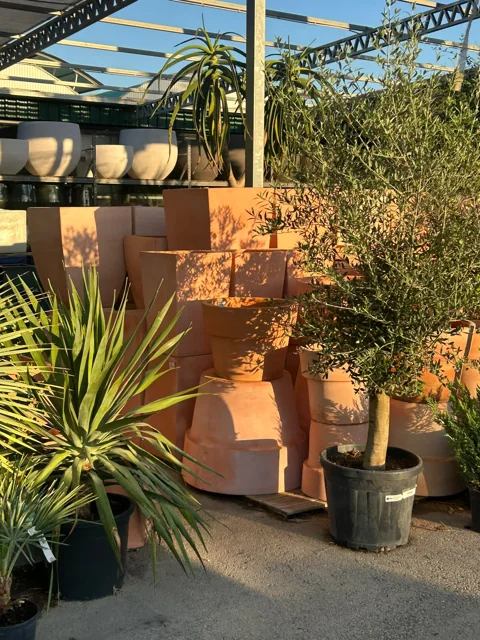
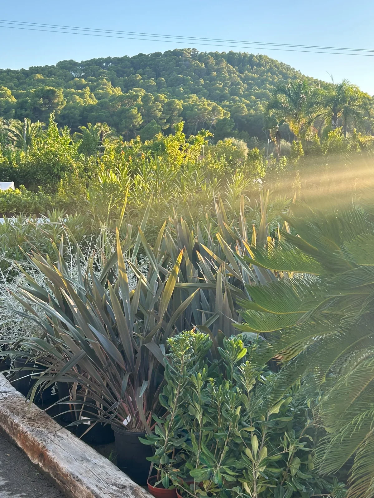

TOSCAL GARDEN · XÀBIA
Donde empieza
tu lado verde.
Un paseo entre plantas. Una idea para tu casa. Un jardín que se siente tuyo. Encuentra tu forma de vivir más cerca de la naturaleza.
 20.000 m²para dejarte inspirar.
20.000 m²para dejarte inspirar.
UN MUNDO POR DESCUBRIR
Para tu casa.
Para tu lado más verde.
Una terraza, un jardín o ese rincón junto a la ventana. Tenemos algo para cada espacio y te ayudamos a elegirlo.

NATURALEZA EN CASAPlantas y árboles
Del pequeño cactus al gran ejemplar.
 EL DETALLE QUE IMPORTA
EL DETALLE QUE IMPORTAMacetas y cerámica
Tan especiales como lo que crece dentro.
 PARA REGALAR Y REGALARTE
PARA REGALAR Y REGALARTEFlores y decoración
Pequeñas cosas que alegran el día.
Y todo lo que necesitas para verlo crecer.


Como tu jardín.
LAS RAÍCES DE TOSCAL
Mediterráneos
por naturaleza.
Llevamos más de 30 años creciendo en Xàbia. Con las manos en la tierra y una forma muy nuestra de entender el jardín: cercano, natural y lleno de vida.
Conocemos el sol, el salitre y las plantas que se sienten en casa aquí. Por eso, además de ayudarte a elegir, te contamos cómo cuidarlas.
Mejor Garden de la Comunidad ValencianaPremio Garden Magazine · 2022/23
DA EL PRIMER PASO
Tu idea merece
echar raíces.
Ese jardín que imaginas puede empezar con una conversación. Te acompañamos en el diseño y la creación de un espacio pensado para ti y para nuestro clima.
Tú pones la idea. Nosotros, el conocimiento.

NOS VEMOS ENTRE PLANTAS
Hay que venir.
Y dejarse llevar.
Date un paseo, encuentra inspiración y pregúntanos lo que necesites. Aquí las buenas ideas se cultivan sin prisa.
Estamos en Xàbia
Camí Assagador de Cabanes, s/n03730 Xàbia, Alicante
Haz un hueco para el garden
Lunes a sábado 08:00–18:30
Domingos y festivos 09:00–14:00